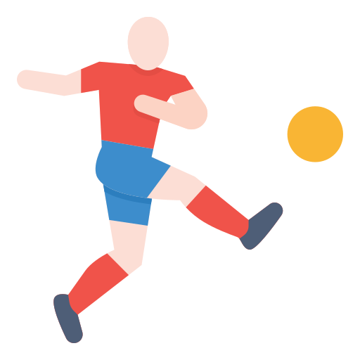

Pelé, Maradona, Messi, o Cristiano
09/11/21
Contexto
El fútbol es uno de los deportes más famosos de la actualidad, es uno de los deportes con más aficionados alrededor del mundo y sin duda uno de los más entretenidos y fáciles tanto de aprender a jugar como de entender. El fútbol nació hace más de 100 años y desde su creación se ha difundido ampliamente, llegando a todos los rincones del planeta.
Desarrollo
Siendo un deporte tan importante para tantos países y con tanta difusión, además de sus décadas de existencia, es evidente que por este han pasado a la historia grandes figuras que marcaron una época y gracias a los cuales, miles se han enamorado del deporte. A lo largo de los años entre la afición se han abierto muchos debates acerca de quien ha sido el mejor de todos los tiempos. Entre los favoritos de la afición se encuentran Lionel Messi, Pelé, Diego Armando Maradona, y Cristiano Ronaldo. Sin embargo es muy dificil decir quien es el mejor ya que todos tienen o tuvieron cualidades diferentes, además dehaber jugado en épocas diferentes de este deporte
Motivación
La razón para elegir este tema fue mi pasión por este deporte el cual juego desde niño, y al tener la oportunidad de escribir este blog aproveché para tocar un tema que me gusta tanto.